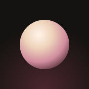

--:--
In uso sul Mac
Batteria
Volume
Tocca per parlare
IDLE SYNC vorrebbe eseguire questa azione sul tuo Mac.

IDLE SYNC
Versione 2.0
Dispositivi collegati
Tutti i dispositivi vedono la stessa conversazione e possono confermare i comandi.
Questo dispositivo
Assistente
Le risposte rapide sono ideali per la voce; quelle accurate ragionano di più sui compiti complessi.
Sicurezza
Comandi del Terminale e script AppleScript vanno approvati da uno dei tuoi dispositivi prima di partire.
Voce
Azioni rapide
Aspetto
Dati
IDLE SYNC 2.0 · nata da IDLE SOCIAL